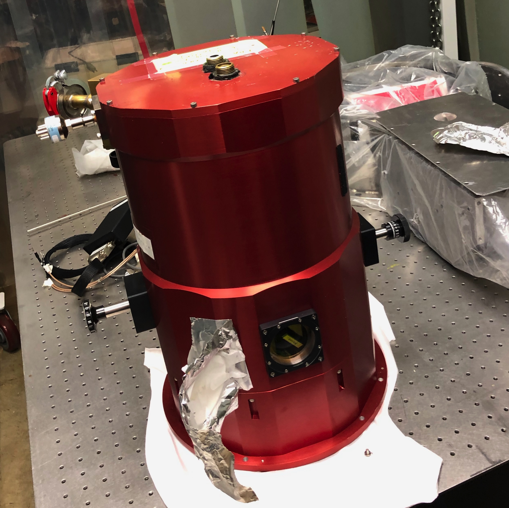
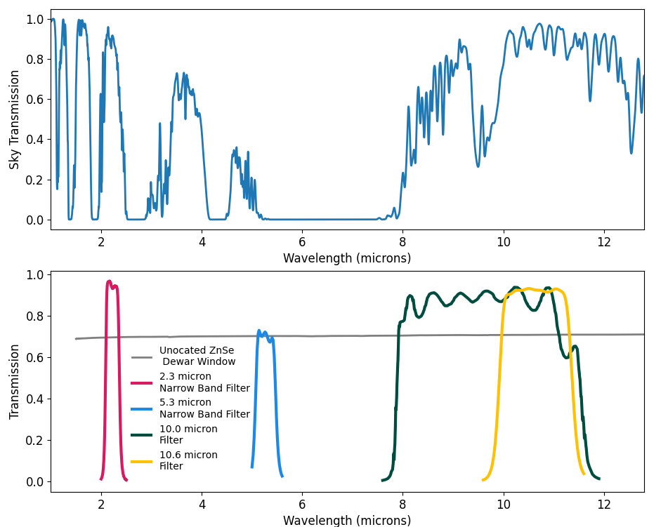

10 Micron Detector Testing
The 8 - 13 micron region of the infrared is important for directly imaging Earth-like planets around Solar type stars because the best contrast for a rocky body is achieved within this wavelength range. Important molecular gases can also be detected in this wavelength regime at very low resolutions. I am testing a 1024 by 1024 HgCdTe array with a wavelength cutoff of 12.8 microns for potential use in ground-based instruments that are focused on detecting and characterizing exoplanets. We have taken fast read out images with the detector at room temperature and are in the process of retrofitting the former Keck Angle Tracker dewar for cryogenic testing of the detector.
The previous filter wheel and mechanical turn were the only original internal parts kept in the dewar. The filter wheel slots were fitted with new holders and spacers to hold smaller, new filters and infrared blockers. A new L-brakcet shaped mount is used to hold a gold-coated, aluminum mirror that can pivot slightly around a ball. The current dewar window is a flat piece of fused silica and will eventually get replaced by a plano-convex ZnSe lens. The ultimate goal is to have a simple reimaging system that can capture images within two narrow bandpasses (2.3 and 5.3 microns) and two broad filters centered at 10.0 and 10.6 microns.
The next step in this project is finalizing the design of the detector mount and other parts to feed through the detector read out electronics. A SIDECAR ASIC will be used within the dewar to amplify and digitize the detector signals. Outside of the dewar, a MACIE card is used to control the SIDECAR ASIC and transfer data to a computer.

The "Red Dewar" formerly known as the Keck Angle Tracker

Room temperature detector image

Top: Atmospheric transmission across the wavelength range of the detector. Bottom: Transmission curves of the filter set for detector testing.
The filter set was chosen to fall between or near atmospheric windows.
In other words, I am not dark matter, or anything like it. Black people are human.
Black people, too, are luminous matter. I don’t mean this metaphorically; we are literally luminous.
We give off infrared light due to our body heat, just like white people.
Light interacts with our skin, making us physically visible to anyone who engages the world through sight-not just police but also our beloveds.
Despite the violence we face, Black people, too, remain curious.
- Chanda Prescod-Weinstein, Disordered Cosmos